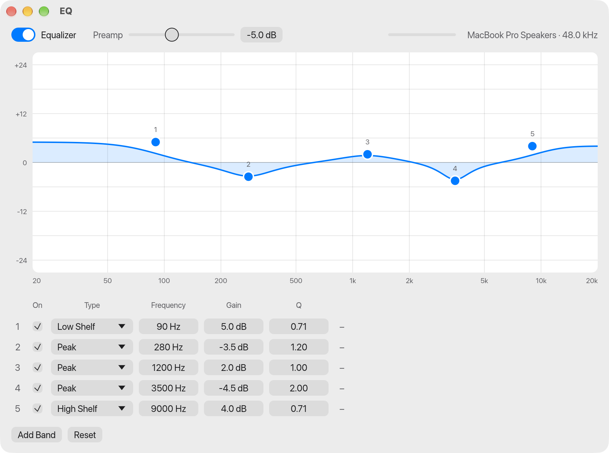

EQ applies a parametric equalizer to all system audio on your Mac, on speakers or headphones. Shape the sound by dragging points on a frequency-response curve, the way you would in a studio EQ plugin, and hear the change immediately.
Unlike most Mac equalizers it does not install a virtual audio device. It uses the Core Audio process tap API Apple added in macOS 14.2, so there is nothing to uninstall and your output device and volume keys keep working as usual.
Features
System-wide
One EQ for everything the Mac plays, with no per-app setup.
Fully parametric
Up to 16 bands, each with its own frequency (20 Hz to 20 kHz), gain (±24 dB) and Q.
Five filter types
Peak, low shelf, high shelf, low pass and high pass.
AutoEq headphone presets
Import a headphone correction from AutoEq, or any Equalizer APO ParametricEQ.txt file.
A curve for each output
Speakers and headphones each remember their own EQ and get it back when you switch.
Clip protection
A built-in limiter keeps heavy boosts from distorting. On by default.
Lives in the menu bar
Close the window and the EQ keeps running. Switch presets or bypass from the menu bar, and open at login.
Private
Audio is processed on your Mac and never leaves it. The app makes no network connections.
Native feel
Light and dark appearance, your accent color, undo and redo, and a full menu bar.
Install
- Download
EQ.zipfrom the latest release and unzip it. - Move
EQ.appto Applications and open it. - The app is not notarized by Apple, so macOS blocks the first launch. Open System Settings › Privacy & Security, scroll down, and click Open Anyway.
- Allow system audio capture when macOS asks.
Frequently asked questions
Do I need BlackHole, Soundflower or another virtual audio driver?
No. EQ captures system audio with a Core Audio process tap, which is built into macOS 14.2 and later.
Is EQ free?
Yes. EQ is free and open source under the GPL-3.0 license, with no account and no in-app purchases.
Which Macs does it run on?
Any Mac on macOS 14.2 (Sonoma) or later. The download is a universal build for Apple silicon and Intel.
How do I use an AutoEq headphone profile on a Mac?
Find your headphones on autoeq.app, choose “EqualizerAPO ParametricEq” and download the file. Import it with Presets › Import…, or drop it on the window.
Why does macOS ask for permission to record audio?
Reading system audio is what lets the app equalize it, and macOS guards that behind the “System Audio Recording” permission. Nothing is recorded or saved.
How do I uninstall it?
Turn off EQ › Open at Login if you enabled it, quit the app and delete EQ.app. No drivers or background services are installed.